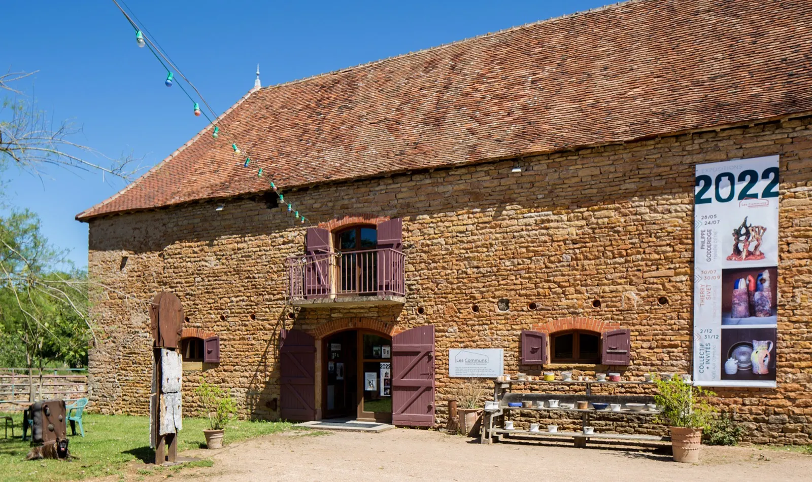
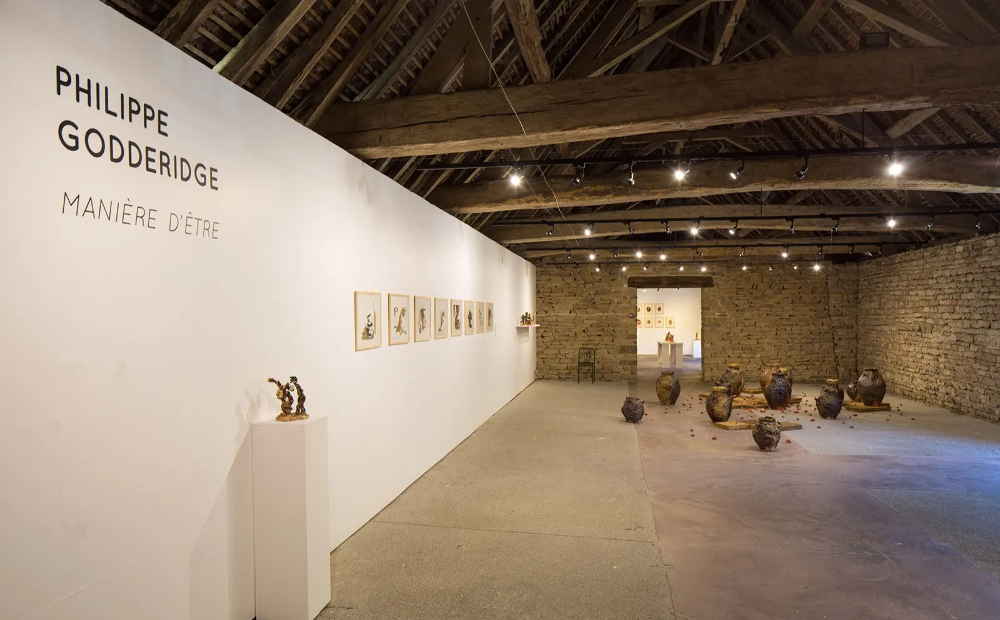
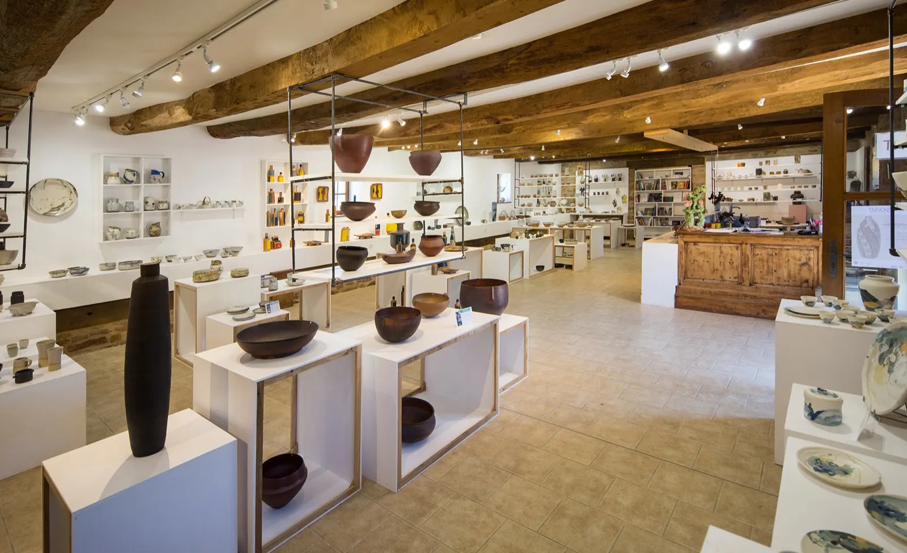
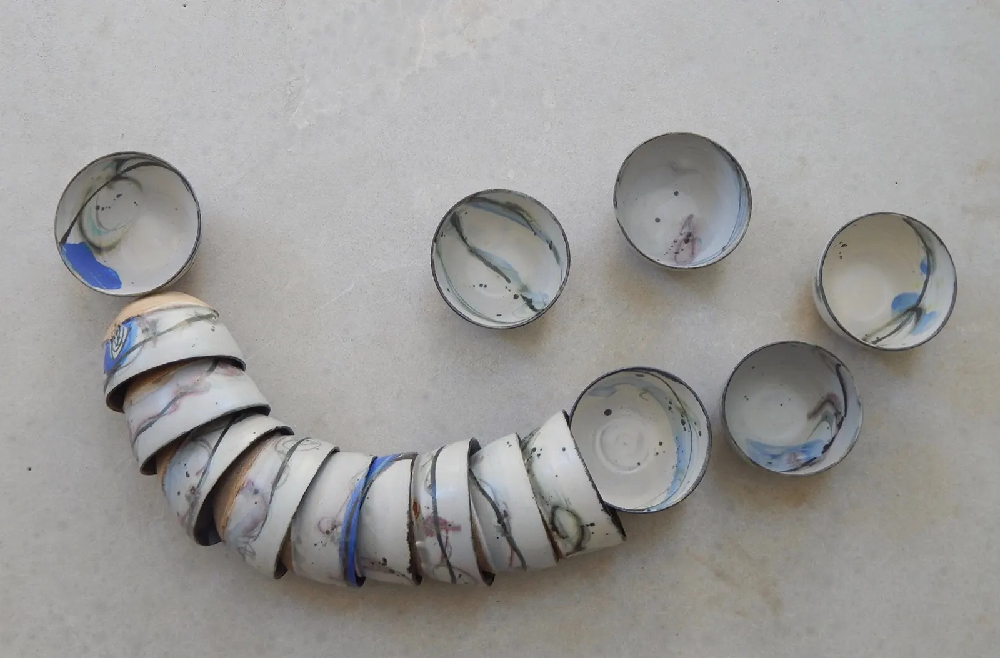
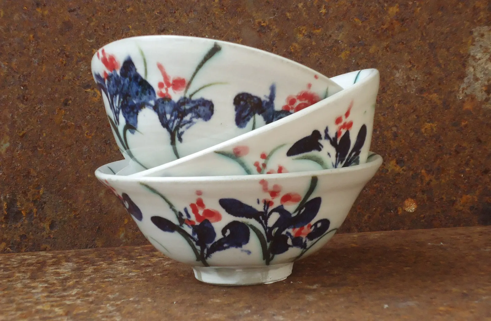
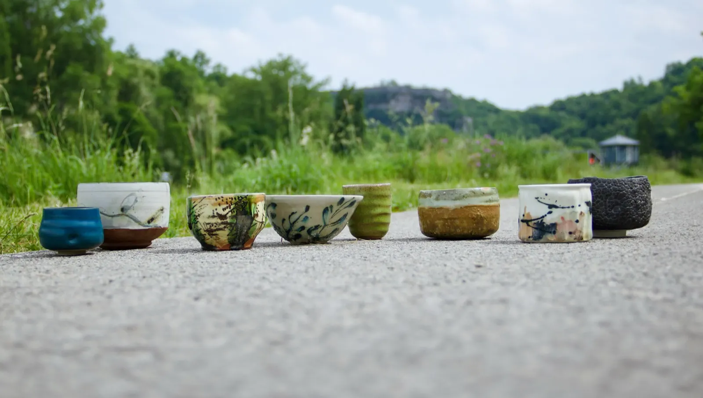
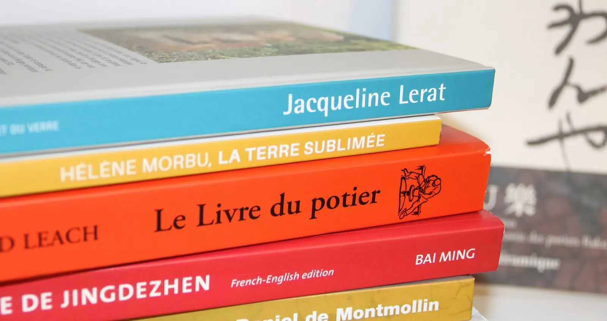
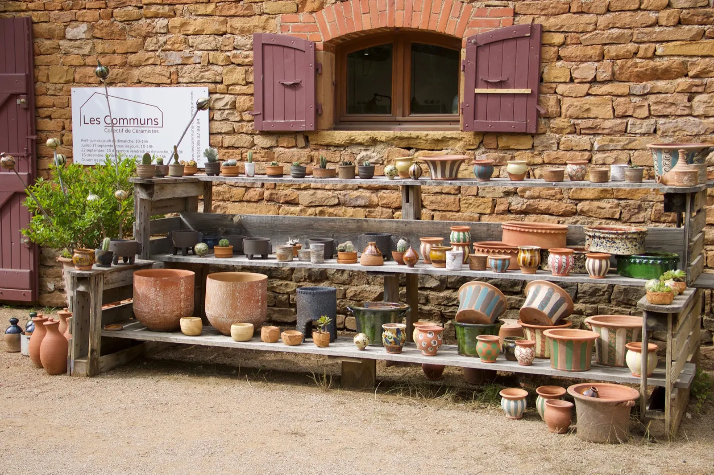

Le Bois Dernier, Cormatin Entrée de la boutiqueUn corps de ferme bourguignon dédié à la céramique, près de Cluny.
Dix céramistes réunis en collectif y présentent leur travail : la boutique dans l'ancienne écurie, une galerie d'expositions temporaires à l'étage.
Ouvert d'avril à décembre, fermé en novembre.
- 200 m² sur deux étages
- 10 céramistes associés
- Boutique ouverte en 2015
- Lieu autogéré et autofinancé
- Cormatin, près de Cluny
Un lieu, un collectif.
Sur deux étages, le corps de ferme accueille à la fois une boutique qui propose les œuvres des dix céramistes de l'association et une galerie qui présente des expositions temporaires. Le lieu est géré et financé par ses membres.
La galerie d'expositions
Collectives ou personnelles, les expositions mettent en avant une approche, une démarche, un univers affirmé qui touche le collectif et qu'il veut partager.
Elles peuvent surprendre par leur contenu ou leur présentation, émouvoir, questionner. Les vernissages sont de grands moments de convivialité.

La boutique, dans l'ancienne écurie
Ouverte en 2015, la boutique associative occupe 100 m² et présente une sélection des dernières créations des dix céramistes : pièces utilitaires et sculpturales, grès, porcelaine, terre vernissée, dans une scénographie régulièrement renouvelée.
Les permanences sont assurées à tour de rôle par l'un des céramistes : l'occasion de les rencontrer et d'échanger avec eux. En décembre, la boutique s'enrichit d'œuvres de céramistes invités, le temps de « Noël aux Communs ».

L'ancienne écurie, 100 m²Dix céramistes, un projet commun.
Promouvoir la céramique contemporaine, partager un certain regard sur le métier, mettre en avant des approches singulières. Le collectif fonctionne de façon collégiale : chacun donne forme au projet selon ses connaissances et ses savoir-faire, et tous tiennent le lieu à tour de rôle.
- Quentin Baumlin
- Corinne Betton
- Gaëlle Buchaudon
- Myriam Chemla
- Françoise Chole
- Valéry Maillot
- Estelle Robert
- Lucie Sangoy
- Thierry Sivet
- Maud Thiéfaine



« Promouvoir le travail de la terre, proposer un large spectre céramique, faire découvrir aux néophytes les multiples facettes de ce médium et nourrir plus encore les amateurs. »La vocation du collectif

La librairie et les catalogues
Installée dans la boutique, la librairie vend les catalogues des expositions présentées aux Communs, des ouvrages spécialisés (monographies, livres techniques, historiques ou poétiques) et des DVD, édités par le collectif ou ses partenaires : La revue de la céramique, les éditions Argile, APCP.
- Pablo Castillo15 €
- Françoise Cholé15 €
- Nicolas Rousseau15 €
- Ingrid Van Munster15 €
- Myriam Chemla15 €
- Philippe Godderidge, Manière d'être15 €
- Thierry Sivet, Traces de passage15 €
- Cuire au bois15 €
Le catalogue de la dernière exposition, comme les plus anciens, peut aussi se commander par courrier.
Offrir un bon cadeau
Vous voulez offrir une céramique sans savoir laquelle plairait ? Le collectif propose des bons cadeaux du montant de votre choix, à demander sur place ou par mail : commandés par mail, ils arrivent directement dans la boîte aux lettres.
Venir aux Communs
La galerie-boutique vous accueille d'avril à décembre, au lieu-dit du Bois Dernier à Cormatin.

Devant la boutique- Adresse
- Le Bois Dernier
71460 Cormatin - Téléphone
- 03 85 32 98 94
- lescommuns.ceramique@gmail.com
- Les suivre
- Instagram · Facebook